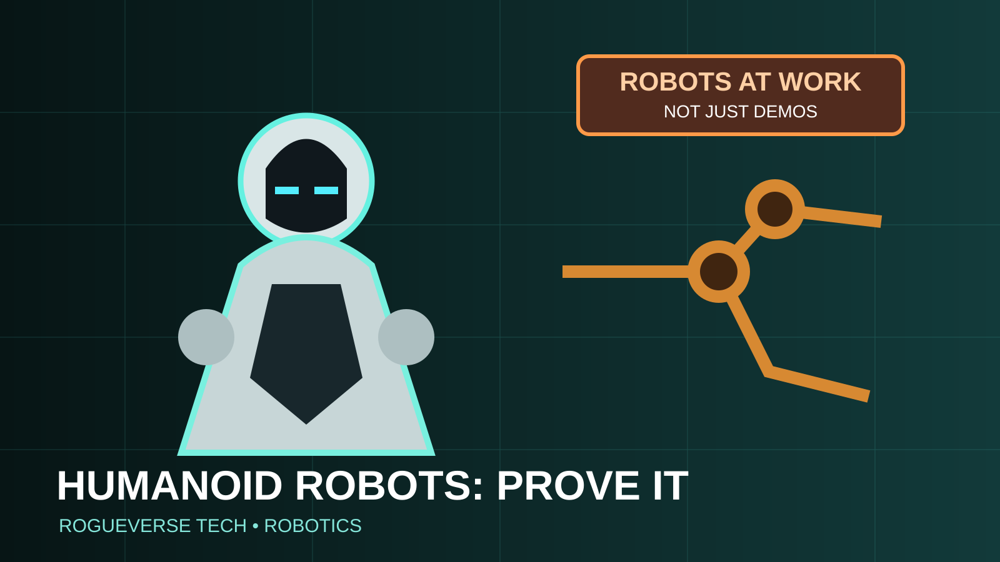

OUR CULTURE / TECH • AUGUST 19, 2026
Humanoid Robots Have Entered Their “Prove It” Era
The backflips got our attention. Now robot makers have to show that humanoids can sort parcels, work factory lines, help around the house, and survive the boring parts of a real shift.

Humanoid robots have spent years winning the internet.
They danced. They boxed. They ran obstacle courses. They recovered from pushes, carried boxes in carefully staged demonstrations and performed the occasional backflip because apparently every new robotics platform must first audition for an action anime.
In 2026 the industry is facing a less glamorous challenge: prove that these machines can work.
At the World Robot Conference in Beijing on August 19, more than 300 companies showcased over 2,000 robotic exhibits, according to Reuters. The important change was not simply the number of machines. More companies were emphasizing parcel sorting, mobile-phone packaging, factory jobs and household tasks rather than spectacle alone.
China has turned humanoids into an industrial race
China is currently the center of gravity for humanoid robot shipments. Reuters reported that Chinese companies accounted for 97 percent of global humanoid shipments in the first half of 2026.
That number needs context. Most humanoids are still not deployed in ordinary commercial jobs. Reuters reported that 65 percent of shipped units remained in non-commercial uses, a reminder that shipment leadership is not the same thing as mass adoption.
Still, China’s manufacturing ecosystem matters. Humanoid robots require motors, actuators, batteries, sensors, cameras, compute modules, precision machining and increasingly sophisticated AI. A country able to make those components cheaply and iterate quickly has an enormous advantage once companies begin competing on reliability and price.
Unitree’s stock-market debut turned robotics hype into finance
The World Robot Conference coincided with a dramatic moment for Unitree. Shares in the Chinese robotics company surged several hundred percent during its Shanghai market debut, showing just how aggressively investors are betting on the category.
Unitree became globally recognizable through agile quadruped and humanoid demonstrations, but public-market enthusiasm raises the pressure to turn technical attention into durable business.
That is healthy for the industry in one sense. Viral videos can sell an idea. Public companies eventually need revenue, customers, service networks and products that perform consistently outside controlled demos.
The boring jobs are the important jobs
Humanoid form makes sense when the environment is already built around people. Factories, warehouses, offices and homes contain stairs, shelves, handles, tools and workstations designed for human dimensions.
If a robot can use the same environment without rebuilding the building around it, humanoids become attractive.
But human-shaped machines also inherit difficult engineering problems. Walking requires balance. Hands require dexterity. Batteries must move the entire body. Cameras and sensors must interpret cluttered spaces. AI has to understand instructions and recover from surprises.
A robot picking up the same box ten thousand times in a controlled cell is one problem. A robot entering a home and finding that the laundry basket moved, the dog is sleeping in the hallway and someone left a shoe on the stairs is another category entirely.
Real-world deployments are finally becoming the benchmark
Reuters highlighted companies such as DexForce and Leju using robots in industrial settings. That is the metric that matters now: useful hours, successful tasks, intervention rates, maintenance requirements and cost per completed job.
Consumers should be skeptical of demos that do not disclose teleoperation, pre-mapped environments or repeated failed attempts. None of those techniques are illegitimate during development, but they can make a robot appear more autonomous than it is.
The industry's next phase will be measured less by whether a robot can perform a spectacular task once and more by whether it can perform an ordinary task thousands of times without a human babysitter.
Home robots will face an even higher trust barrier
The consumer dream is obvious: a general-purpose helper that can clean, carry objects, load appliances, assist older relatives and handle basic chores.
The problem is that a household robot must be both capable and trustworthy. A machine moving through private spaces can potentially collect a continuous map of the home along with audio, video and behavioral data. It may learn schedules, recognize family members and interact with connected devices.
That transforms robotics into a privacy story as much as a hardware story.
People may tolerate an imperfect phone app. They will be far less forgiving of a 100-pound machine making a bad physical decision near a child, pet or staircase.
Humanoid does not automatically mean replacement worker
Much of the robotics conversation immediately jumps to jobs. Some jobs will absolutely change. Repetitive factory work, hazardous handling, warehouse movement and certain service tasks are obvious targets for automation.
But the economic impact will depend on cost, reliability and how robots are deployed. A machine that eliminates dangerous lifting while letting one worker supervise several stations produces a different labor outcome from a deployment designed only to remove headcount.
It is also possible that many early humanoid jobs will be tasks businesses struggle to fill consistently, particularly in aging societies or physically demanding industries.
The technology does not determine the labor policy by itself. Companies and governments do.
The biggest challenge is not intelligence alone
Modern AI has dramatically improved perception, language understanding and planning, but robotics lives in the physical world. Physics does not care how impressive a language model benchmark is.
Motors wear out. Batteries drain. Floors become slippery. Objects deform. People behave unpredictably. Wireless connections fail. A robot that makes one incorrect movement can break itself, damage equipment or injure someone.
This is why simulation and large AI models are only part of the stack. Robotics companies also need safety systems, mechanical durability, training data, field service, manufacturing scale and conservative failure behavior.
What to watch next
The key numbers over the next two years will not be social-media views. Watch commercial deployment counts, average selling prices, task-completion rates, battery endurance, intervention rates and whether companies begin publishing credible total-cost-of-ownership data.
Also watch specialization. The first commercially successful “humanoid” may not be a universal household android. It may be a semi-general industrial worker optimized for a narrow collection of tasks in environments that are structured enough to keep failure manageable.
That would still be a major transition.
The RogueVerse Tech verdict
Humanoid robotics has crossed an important threshold. The machines are no longer interesting simply because they can move like us. The question is whether that body plan can become economically useful.
China’s shipment dominance, the scale of the Beijing conference and investor excitement around Unitree all suggest the industry has momentum. But momentum is not maturity.
The next winning robot will not be the one with the best dance routine.
It will be the one that shows up tomorrow, performs the same job again, makes fewer mistakes, costs less than the alternative and does not need a technician standing just outside the camera frame.
The demo era made humanoids famous. The prove-it era will decide whether they become normal.